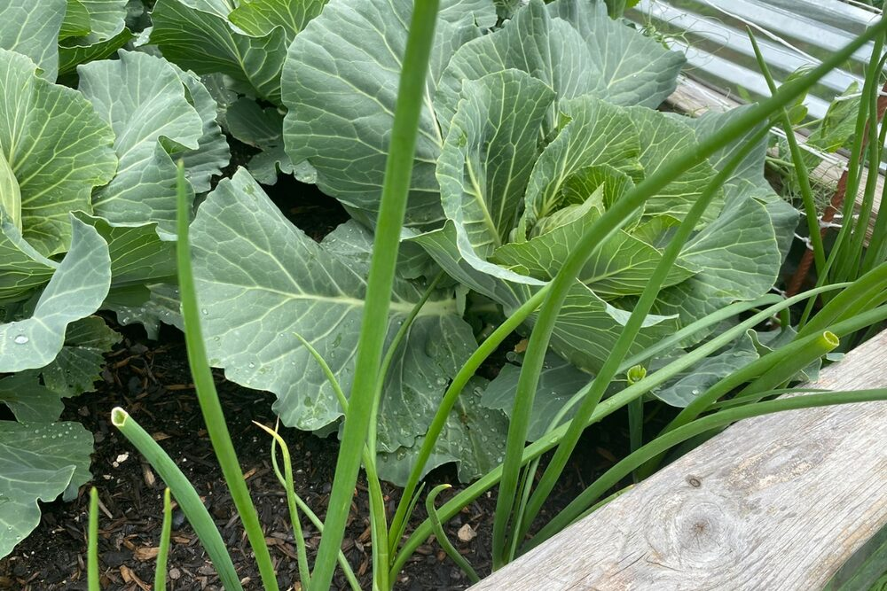
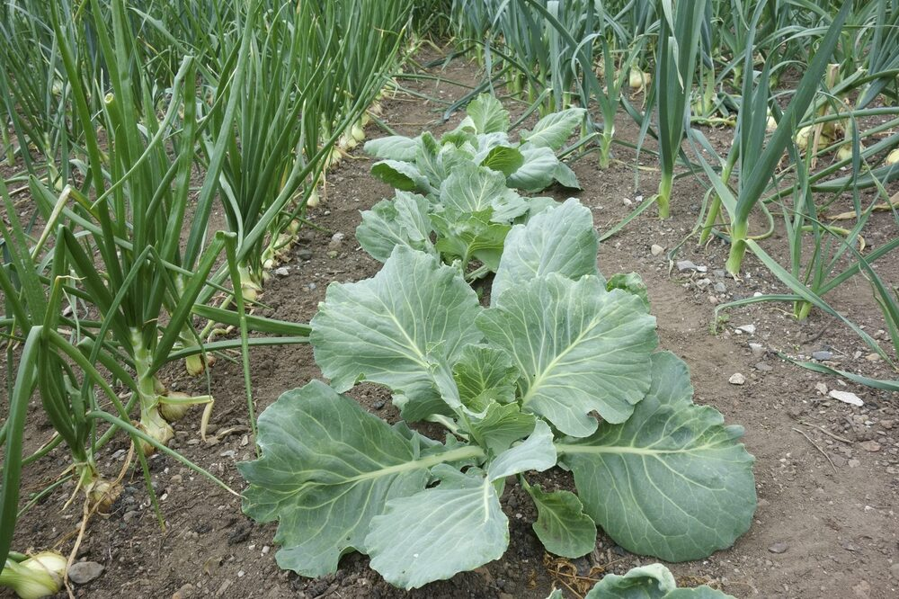
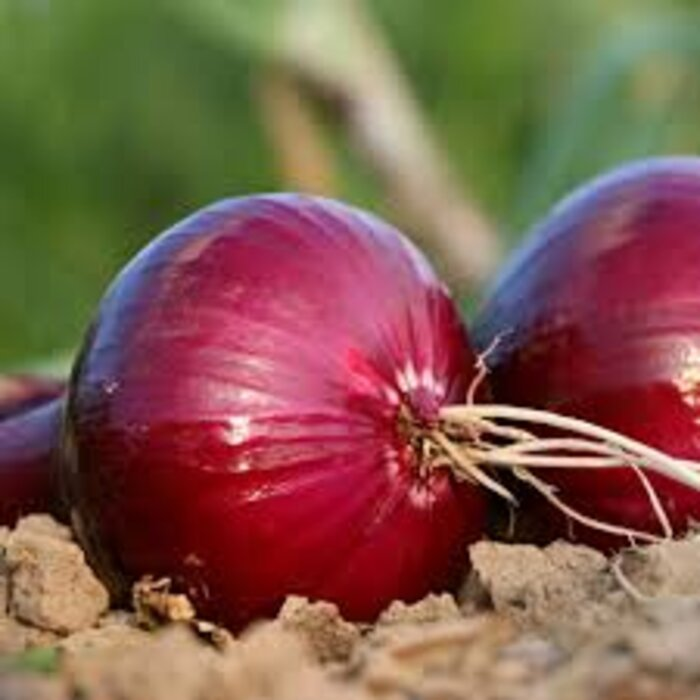
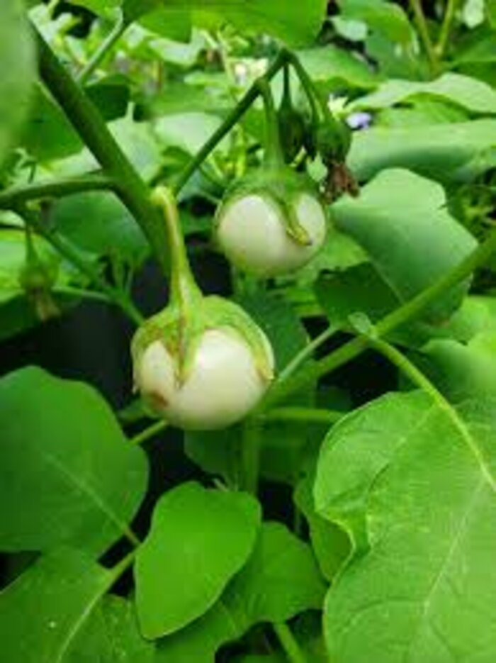

Zambian-owned, established 2024
Insansu Venture is an integrated agribusiness company working from the field to the shelf — climate-smart production, aggregation, agro-processing and market development, built around Zambia's own crops and communities.

We build Zambian-owned agribusiness from crops most companies overlook — indigenous cereals, legumes and horticulture already suited to the land.
Insansu Venture works with smallholder farmers and their communities to move indigenous crops through every stage of the value chain — climate-smart production, aggregation, agro-processing, value addition and market development — so that more of the value created stays close to where the crop was grown.
Our work draws on Zambia's own agricultural and indigenous knowledge traditions, paired with practical, climate-resilient methods suited to Northern and Luapula Provinces and beyond.
What we do
Supporting smallholder growers with farming practices suited to indigenous cereals, legumes and horticulture — built for Zambia's changing climate, not against it.
Bringing together produce from smallholder growers at scale, so quality and volume are consistent enough to serve processors and buyers reliably.
Turning raw indigenous crops into nutritious, market-ready products — from peanut butter to composite flours — closer to where they're grown.
Connecting finished products and the growers behind them to buyers, retailers and institutions, so the whole chain has somewhere to sell.
From the garden
A look at what's already in the ground, and the value-added products it becomes.



Indigenous leafy vegetables — chibwabwa, katapa, kalembula and cowpea leaves — are being added to our crop mix.
Where we work
Two flagship projects are being prepared with partners and funders — one in indigenous crop processing, one in community water infrastructure.
A proposed 24-month initiative across Northern and Luapula Provinces, building climate-smart production and processing capacity for indigenous crops into peanut butter and composite flours.
Read moreA pilot at our Chipongwe farm near Kafue: solar-powered boreholes supplying safe household water and drip irrigation for 10 lead farming households, alongside a 2 ha Insansu anchor farm.
Read moreWhether you're a partner, funder or organization interested in Zambia's indigenous crop value chains, we'd like to hear from you.
Get in touch